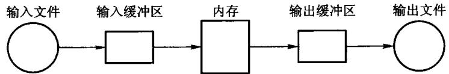
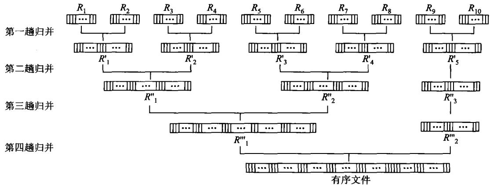
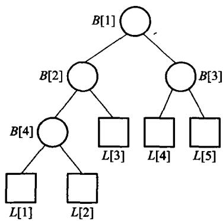
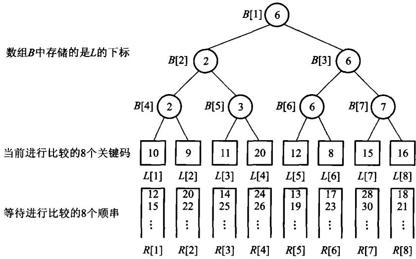
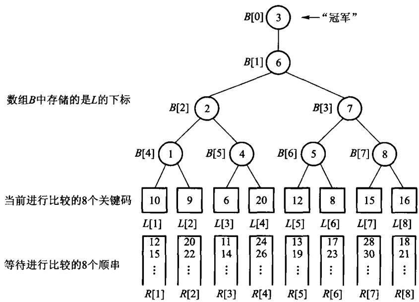

数据放不进内存的时候，怎么排序。
前八章所有算法都有一个隐含前提：任意元素的访问代价相同。 一旦数据在磁盘上，这个前提就没了。
| 典型量级 | |
|---|---|
| 主存访问 | 几十纳秒 |
| 磁盘寻道 + 旋转 | 几毫秒 |
| 差距 | 约 10 万倍 |
所以外排序的代价不数比较次数，数「读写了多少次外存」。
一个直接推论：顺序读写远比随机读写划算—— 寻道一次之后连续读一大块，摊到每个字节上几乎免费。
设文件有 N 条记录，一页装 B 条：
例：3000 条记录、每页 100 条，一趟至少读 30 页、写 30 页。
多一趟归并的代价是多读写整个文件， 远比内存里多做几次比较昂贵。
| 记录类型 | 页内组织 | 更新代价 |
|---|---|---|
| 定长 | 直接按槽排列 | 位置容易计算 |
| 变长 | 页尾槽目录记偏移与长度 | 记录可移动，槽号不变 |
删除也有两种选择：
索引保存“关键码 → 页号/槽号”，把逻辑顺序与物理位置分开。
第一阶段: 分段读进内存, 排好, 写回磁盘 -> 若干个「顺串」(run)
第二阶段: 把这些顺串归并成一个有序文件两个阶段各有优化空间：
朴素做法：内存能装 M 个，就每次读 M 个排好写出去，顺串长度恰好 M。
置换选择能让顺串平均长到 2M。

内存里维持一个最小堆, 装满 M 个
反复:
取出堆顶, 写进当前顺串
读入下一个记录:
它 >= 刚写出的那个吗?
是 -> 放进堆, 还能进当前顺串
否 -> 冻结它, 等下一个顺串再用
堆空了 -> 当前顺串结束, 解冻全部冻结的记录关键在「冻结」：比刚写出的值小的记录进不了当前顺串， 但它仍然占着内存，参与下一轮。
工作区 M=7，输入：50 49 35 45 30 25 15 60 16 27 1
| 步 | 输出 | 新输入 | 去向 | 冻结 |
|---|---|---|---|---|
| 1 | 15 | 60 | 活跃 | 空 |
| 2 | 25 | 16 | 冻结 | 16 |
| 3 | 30 | 27 | 冻结 | 16,27 |
| 4 | 35 | 1 | 冻结 | 16,27,1 |
| 5–8 | 45,49,50,60 | 耗尽 | 排空活跃堆 | 16,27,1 |
顺串 1：15 25 30 35 45 49 50 60，长度 8，已经超过 M； 顺串 2：1 16 27。

每轮把顺串两两归并，顺串数减半。m 个顺串要 ⌈log2m⌉ 轮。
每一轮都要把整个文件读一遍写一遍—— 所以总的外存访问量是 2N⌈log2m⌉。
要减少轮数，就得提高归并路数。
若初始顺串每条 200 条：3000/200=15 条顺串。
第 0 层: 15 条 × 200
第 1 趟: 8 条，长度约 400
第 2 趟: 4 条，长度约 800
第 3 趟: 2 条，长度约 1600
第 4 趟: 1 条，长度 3000需要 ⌈log215⌉=4 趟。 每趟读写 3000 条，总传输约 2×3000×4=24000 条记录。
若置换选择把平均顺串延长到 400，初始只有约 8 条，可省一趟。
k 路归并时，每输出一个记录都要在 k 个候选里挑最小的。
路数 k 增大，轮数降了，但每步的比较次数升了——两者对冲。
要真正受益，就得让「挑最小」变便宜：选择树。
赢者树和败者树是经典教材中的选择树表示，统称 tournament tree（选择树），主要服务外部排序的多路归并；一般内存内取最小通常直接使用二叉堆或优先队列。


void replace(std::size_t player, int value) {
if (player >= players_.size()) {
throw std::out_of_range("tournament player");
}
players_[player] = value;
std::size_t node = leaf_base_ + player;
tree_[node] = player;
while (node > 1) {
node /= 2;
tree_[node] = detail::TournamentOps::better(players_, tree_[node * 2],
tree_[node * 2 + 1]);
}
}
void replace(std::size_t player, int value) {
if (player >= players_.size()) {
throw std::out_of_range("tournament player");
}
players_[player] = value;
subtree_winner_[leaf_base_ + player] = player;
for (std::size_t node = (leaf_base_ + player) / 2; node > 0; node /= 2) {
replay_node(node);
}
champion_ = subtree_winner_[1];
}四路当前值为 [4, 7, 2, 9]：
首轮: min(4,7)=4, min(2,9)=2, min(4,2)=2
输出: 第 2 路的 2
补入: 第 2 路变成 8，候选 [4,7,8,9]
重赛: 只重算“第 2 路叶子 → 根”的两场
结果: 新冠军为 4建树 O(k)；每输出一条只更新一条高为 log k 的路径。
线性扫描要每次检查全部 k 路，选择树只做 O(log k) 次比较。

内部结点记的是输家，赢家继续往上比。
少一次访存。这在多路归并的内层循环里是实打实的收益。
设文件 N 条记录、内存装 M 条、k 路归并：
| 环节 | 代价 |
|---|---|
| 生成顺串（置换选择） | 顺串平均长 2M，段数约 N/2M |
| 归并轮数 | ⌈logk(N/2M)⌉ |
| 每轮外存访问 | 2N（读一遍写一遍） |
| 每步挑最小（选择树） | O(log k) |
优化的两个方向：置换选择减少段数，多路归并减少轮数。
内存只放得下 M 条记录时，目标不是少比较，而是少读写磁盘页。初始顺串、归并路数和缓冲区大小共同决定总 I/O。
输入 4,1,3,2,5,0：先建容量 3 的堆，输出不小于上次输出的记录，较小的记录冻结到下一顺串。 让学生列出两条顺串，再用二路或四路归并合成最终结果。
python3 tools/check_code.py code/ch09/external_sort测试里赢者树和败者树逐项对拍：同一组输入，输出序列必须完全相同。
放映快捷键
→ / 空格下一页 ←上一页 Home / End首尾
N演讲者备注 O缩略图总览 F全屏 D深色
?这张帮助 Esc关闭
导出 PDF：浏览器打印（Ctrl/Cmd+P），每页一张幻灯片。